Gnossienne No. 1
A piano performance by Cooper, with more performance and studio videos to come.
Singer-songwriter · Producer · Eugene, Oregon
Original music, self-produced recordings, and live performances built around connection, versatility, and a genuine love of making music with people.
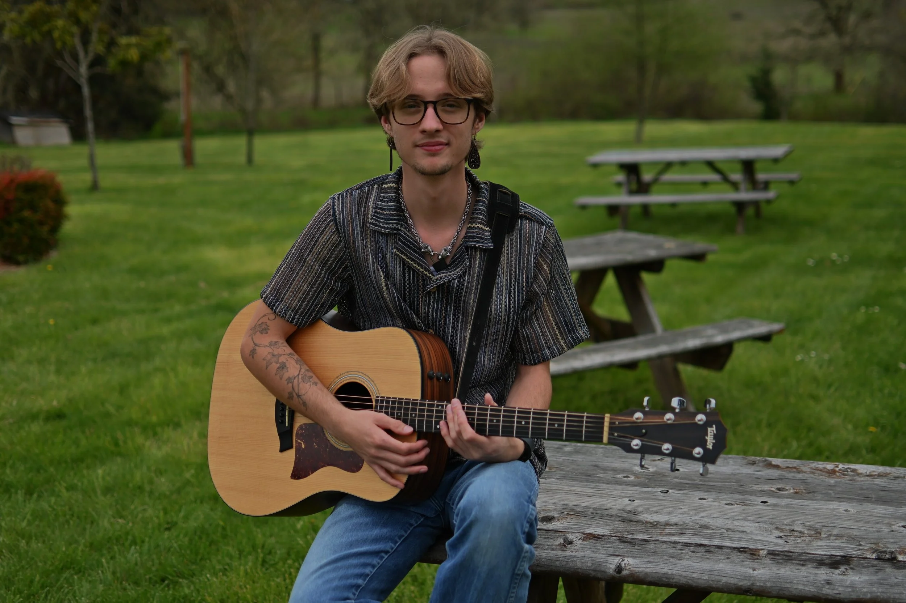
Music & video
Stream the full catalog, watch Cooper at the piano, hear Tree House Trio live, and follow along as new original recordings and performance videos are added.
A piano performance by Cooper, with more performance and studio videos to come.
“Stuck in the Middle with You,” performed by Cooper, Jen, and Dakota.
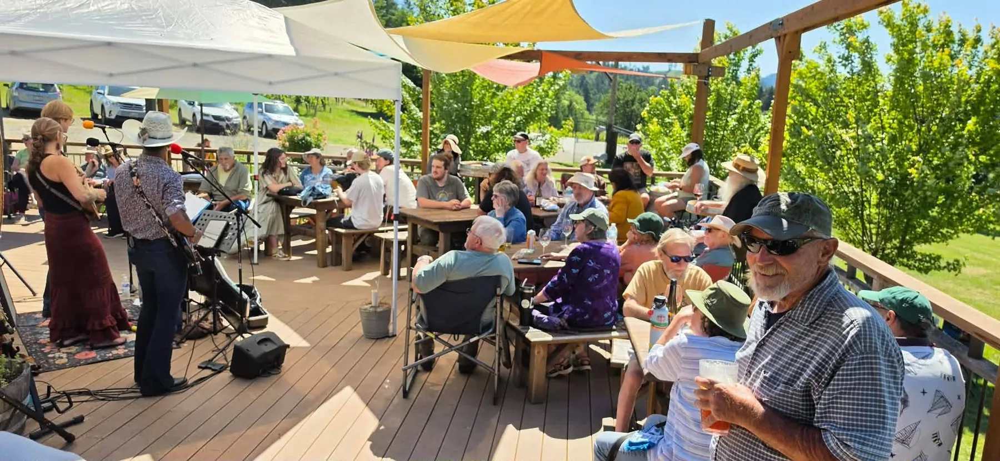
Watch the camera move through the audience during a recent Tree House Trio performance.
The work
From writing alone at the piano to a full weekend of live shows, each project brings out a different part of Cooper’s musical life.
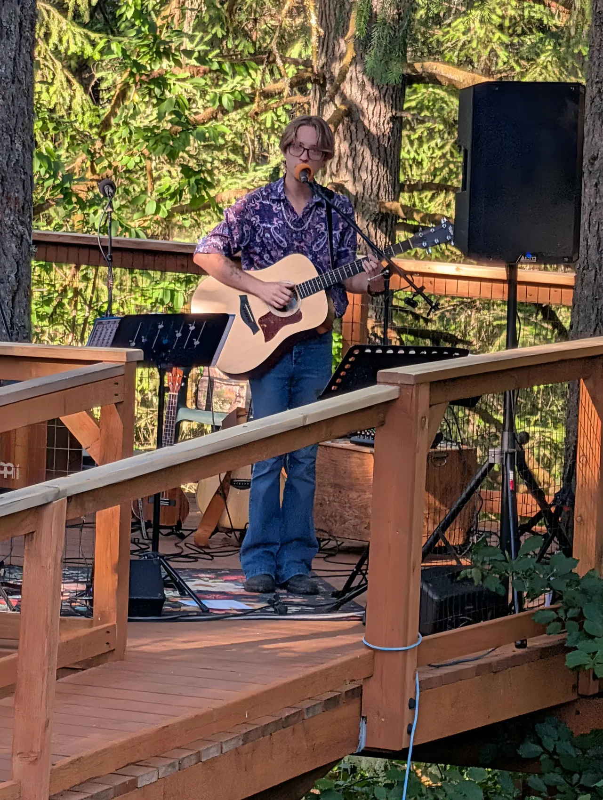
Cooper writes, records, performs, and produces his original music from the ground up. The solo project is where intimate piano pieces, singer-songwriter material, layered studio productions, and years of live performance all meet.
Onstage, the same project can move between acoustic guitar, piano, familiar songs, and originals—shaped to fit the room rather than forcing every show into one format.
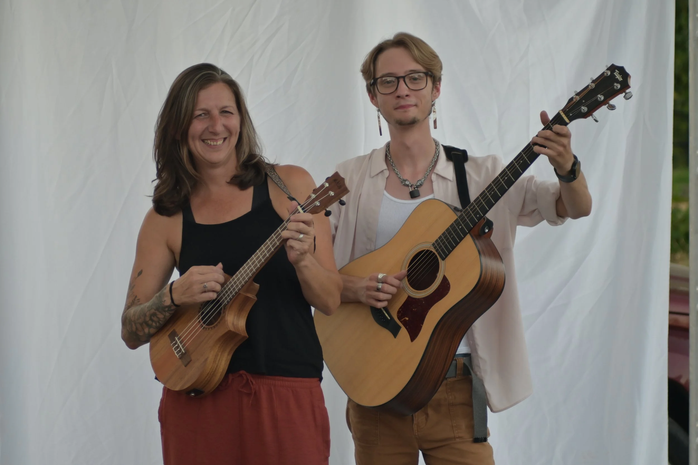
The duo with Jen is the foundation underneath much of Cooper’s live music. Their shared history gives the performances an easy musical connection—built on voices that know how to meet, familiar arrangements, and the flexibility to make a set feel personal.
It is a warm, adaptable format for wineries, private events, listening rooms, and stages that call for something fuller than solo music without losing intimacy.
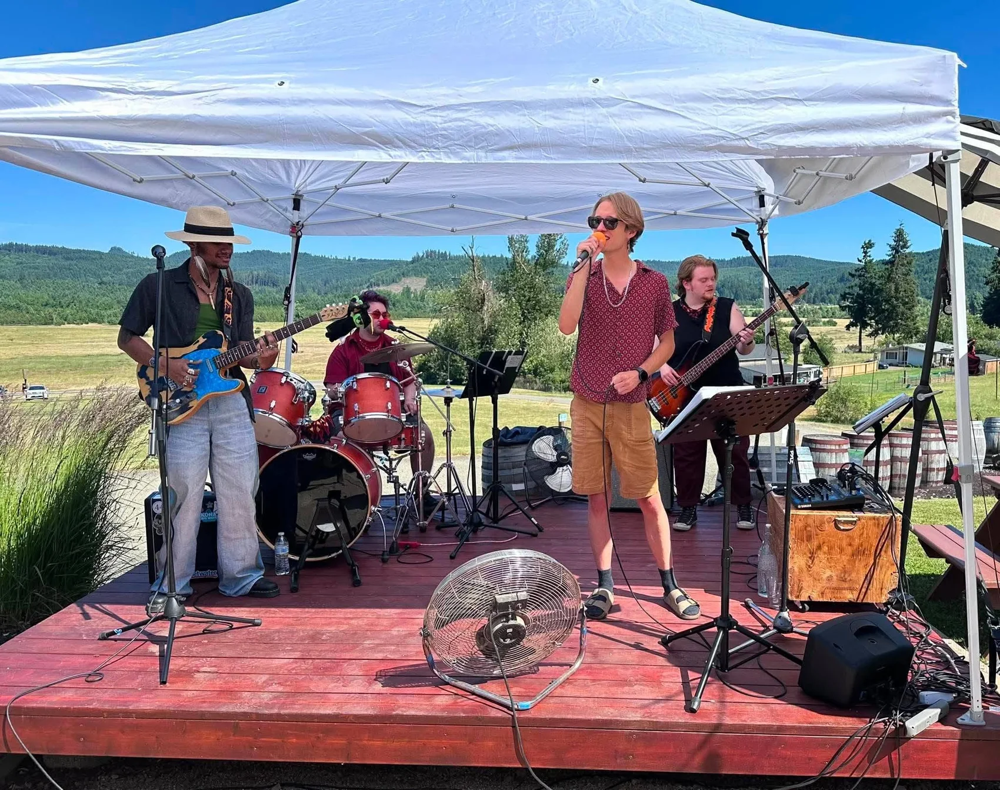
Born of Wildfires expands the music into a full-band setting: bigger rhythm, more electric color, and the energy to carry across an outdoor stage or a busy room.
It is the project for performances that need the lift and momentum of a complete band while keeping the songs and voices at the center.
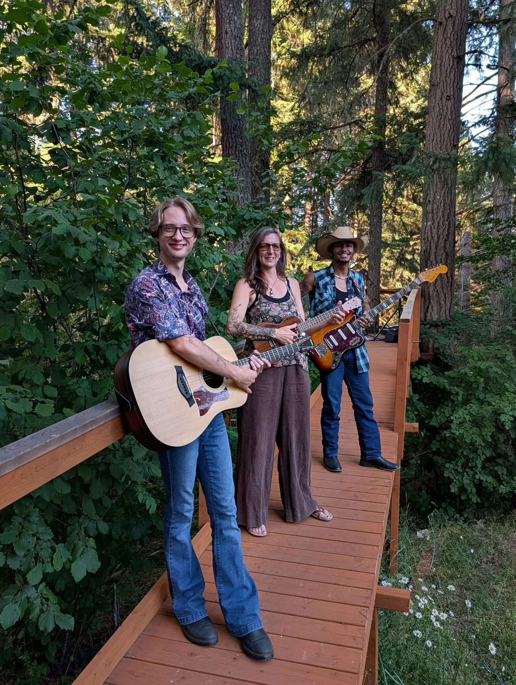
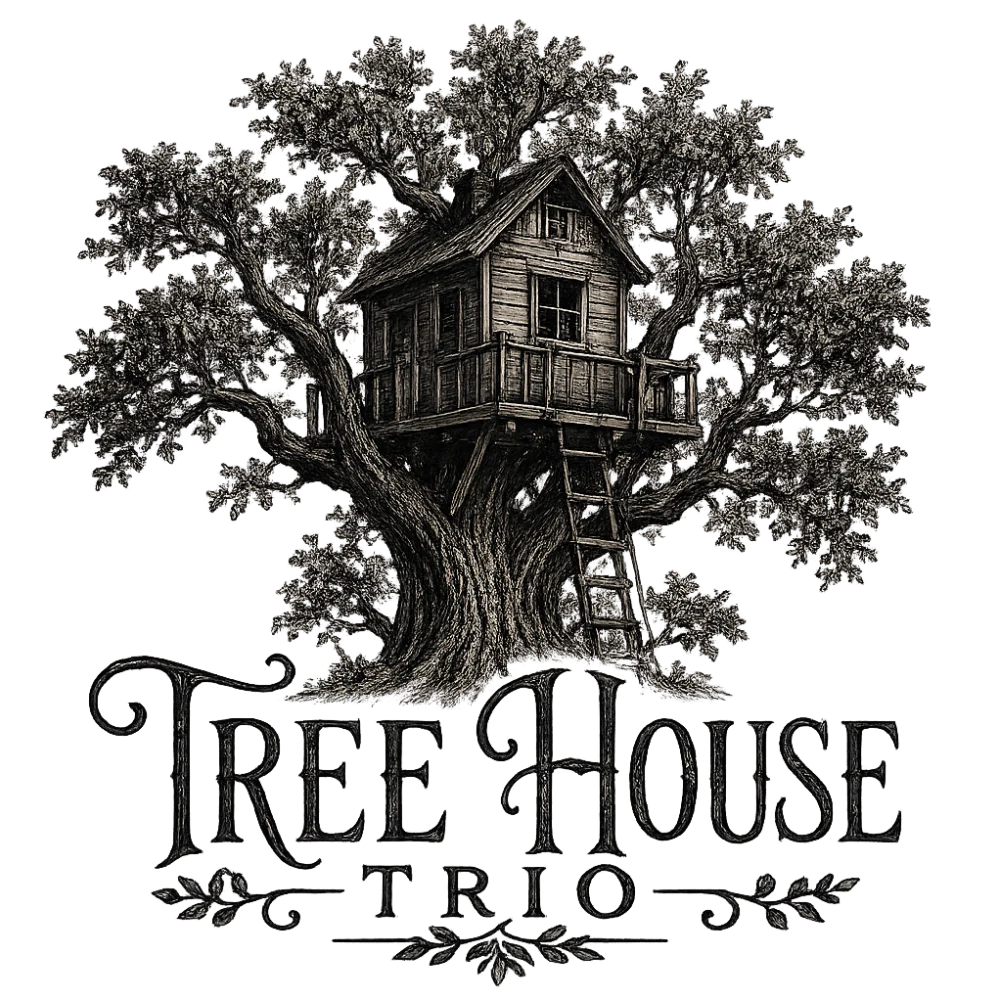
Tree House Trio brings Cooper, Jen, and Dakota together in a playful, flexible live group built around strong vocals, acoustic instruments, electric color, and clear chemistry.
The new trio has quickly become a major part of the calendar, with weekend bookings and performances that move naturally between close listening, dancing, laughter, and a crowd singing along.
Scenes from the work
Not just stage photos—a running story of outdoor rooms, unexpected venues, full tables, new groups, and the people who make each performance matter.
Scroll sideways through the gallery →
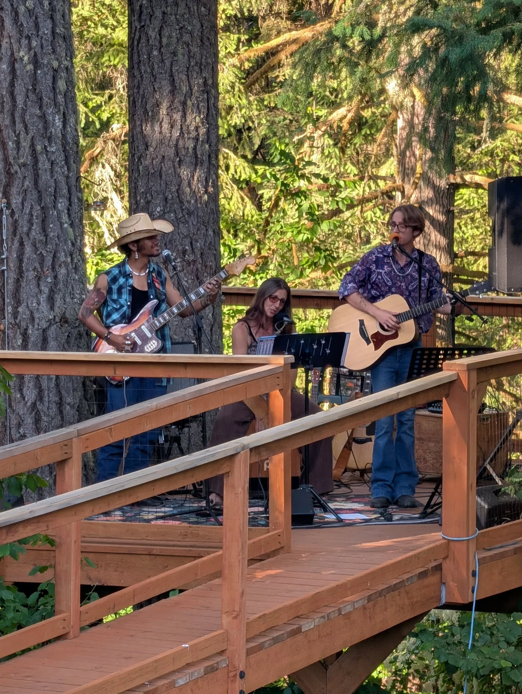
A setting that helped give the trio its name: instruments, voices, and an audience gathered among the trees.
A sunny performance with the trio at one end of the deck and a full audience settling in across the space.
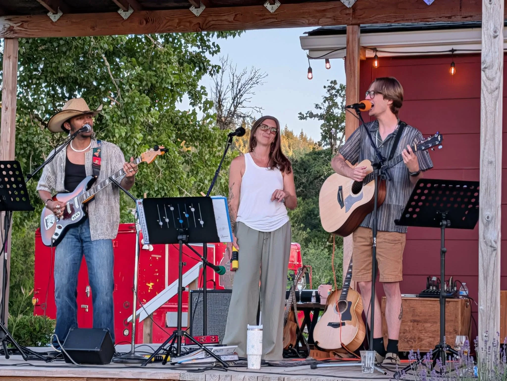
Cooper, Jen, and Dakota sharing lead vocals and shifting the center of the arrangement from song to song.
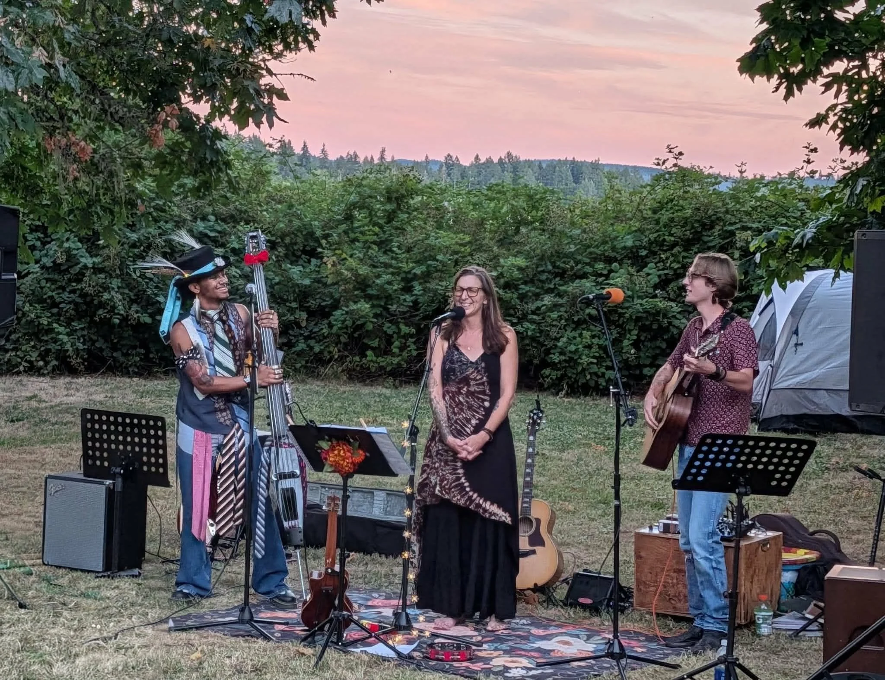
A stripped-back trio performance under an evening sky, surrounded by the particular magic of Fair.
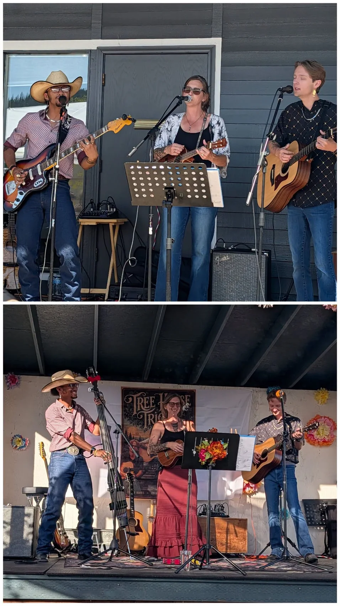
Recent shows at Churchill Estates and the Cottage Grove Public Market—part of a fast-growing run of weekend performances.
The full-band side of the work: drums, bass, electric guitar, and Cooper out front.
An acoustic set built around the room—quiet enough to listen closely, open enough for people to gather around it.
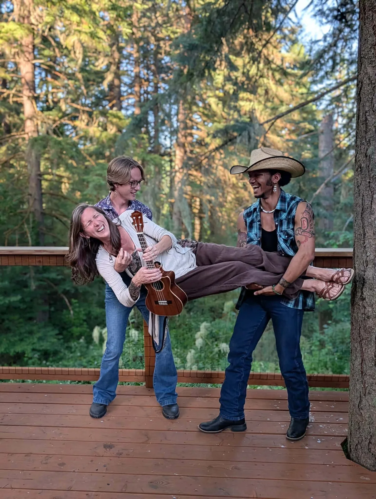
Not every moment needs a stage. The chemistry matters just as much between songs.
Booking & questions
Solo music, the duo, Tree House Trio, or a full-band performance—send the date, location, and kind of event, and Cooper will help match the project to it.